Spécification fonctionnelle et notice d'utilisation
Services ambulants
La carte qui met en relation les communes qui veulent accueillir un service ambulant
et les services ambulants qui cherchent où s'installer.
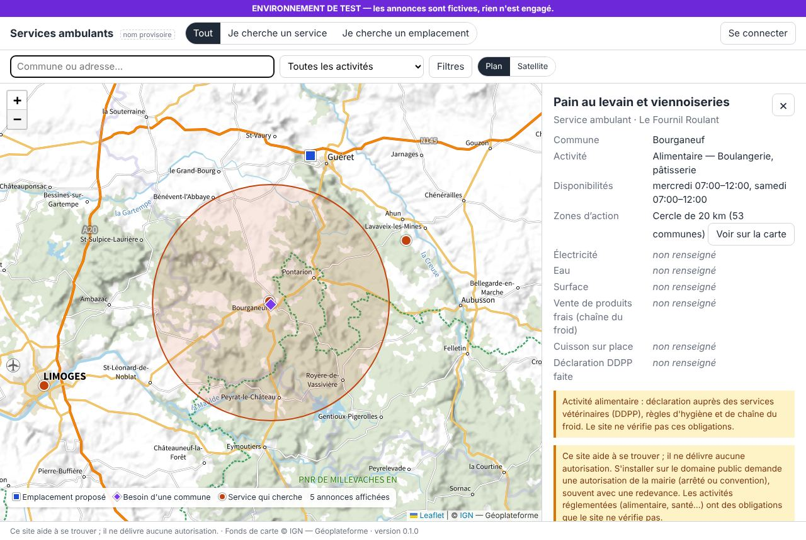
Nom du site
provisoire (« Services ambulants »), le nom n'est pas encore choisi
Version décrite
branche develop, 22 octobre 2026 — site de test
Captures
prises sur le site lui-même, avec des données d'exemple fictives
(comptes et annonces) sur des lieux réels de la Creuse et de la Haute-Vienne
Sommaire
Spécification fonctionnelle
Objet du site
Les acteurs et leurs droits
Les comptes
La recherche d'une mairie
L'offre d'un service ambulant : zones d'action et disponibilités
Correspondances et notifications
Qui voit quoi sur la carte
Les filtres de la carte
Modération et administration
Données publiques utilisées
Cadre légal et confiance
Ce qui n'existe pas encore
Notice d'utilisation
Lire la carte (tout le monde)
Mairie : s'inscrire, publier une recherche, être prévenue
Service ambulant : s'inscrire, déclarer ses zones, suivre ses demandes
Filtrer la carte
Sur téléphone
Modération et administration
Partie 1 — Spécification fonctionnelle
1. Objet du site
Une commune rurale veut souvent un commerce ou un service une fois par semaine sans savoir à qui
s'adresser ; un food truck, un boulanger ou un bureau mobile démarche commune par commune. Le site les
réunit autour d'une seule carte :
les accueillants — mairies d'abord, mais aussi intercommunalités, campings, zones
d'activité, entreprises, parkings de supermarché, associations, organisateurs de marchés — disent
ce qu'ils recherchent ;
les services ambulants — alimentaire, commerce, services à la personne, santé,
administratif, artisanat, culture — disent où ils vont et quand ils sont libres.
Quand les deux correspondent, la mairie est prévenue. Le site aide à se trouver ;
il ne délivre aucune autorisation.
2. Les acteurs et leurs droits
Acteur
Ce qu'il peut faire
Visiteur sans compte
Voir la carte et les fiches, filtrer, chercher une adresse.
Accueillant (mairie…)
Publier des recherches de service, recevoir les notifications, voir
sur la carte les services qui viennent chez lui.
Service ambulant (commerçant)
Publier ses offres (activité, zones d'action,
disponibilités), suivre dans son historique les villes de ses zones et les mairies prévenues.
Modérateur
Vérifier ou refuser un compte accueillant, masquer ou réafficher une
annonce.
Administrateur
En plus : régler le tableau des droits, donner les rôles.
Le tableau des droits. Chaque fonction du site a sa ligne, avec un niveau minimum
parmi cinq : sans compte, compte, abonné, modérateur, administrateur. Une ligne peut être
désactivée pour tout le monde. Le niveau « abonné » existe dès maintenant pour qu'un modèle « gratuit,
puis payant pour aller plus loin » soit un simple réglage le jour venu ; personne n'est abonné tant que
l'abonnement n'existe pas.
3. Les comptes
Deux types de comptes, une seule connexion : accueillant ou service
ambulant.
On s'inscrit, on est connecté, on publie : aucune attente de
validation.
Une mairie indique sa commune, choisie dans le référentiel officiel des communes :
c'est elle qui décide des services qu'elle voit sur la carte.
Un service ambulant peut déclarer son SIRET : il est contrôlé (14 chiffres, clé de
contrôle) mais seulement déclaré ; aucun badge « entreprise vérifiée » tant que la vérification
par l'annuaire des entreprises n'est pas branchée.
Mot de passe de 12 caractères au moins. L'adresse électronique n'est jamais affichée publiquement.
Chacun peut effacer son compte (mot de passe redemandé) : ses annonces partent
avec lui.
4. La recherche d'une mairie
Une mairie déclare qu'elle recherche un ou plusieurs commerces ou services ambulants :
Champ
Règle
Services recherchés
Une ou plusieurs catégories ou activités. Aucune cochée : toutes.
Services exclus
Facultatif : une activité exclue n'est jamais proposée.
Créneaux souhaités
Des plages « jour, de, à » (mardi 11:00–14:00). Aucune : non renseigné.
Le lieu
Sans lieu fixé (la commune) ou un emplacement précis (adresse).
Où
Une adresse cherchée, ou un clic sur la carte ; la commune en est déduite.
Électricité, eau, occupation gratuite
Oui, non ou non renseigné.
Redevance, conditions, description
Texte libre.
Règle générale : une information qu'on n'a pas donnée reste
« non renseigné ». Elle n'est jamais prise pour « non » ni pour zéro.
5. L'offre d'un service ambulant
Un service dit où il est installé, son activité, ses disponibilités (plages « jour,
de, à ») et ses zones d'action. Il peut en créer plusieurs, de trois sortes :
Zone
Comment
Une ville
Choisie dans le référentiel des communes.
Un cercle
Un centre (sa position, ou un clic) et un rayon de 1 à 300 km ; le nombre de
communes couvertes s'affiche pendant le réglage.
Un dessin à main levée
Un contour tracé au doigt ou à la souris sur la carte.
Une commune est dans une zone si son centre y est. Une commune qui ne
déborde dans le cercle que par un bout de territoire n'est pas comptée.
Les zones sont facultatives : sans zone, le service est visible de toutes les
mairies, mais n'en prévient aucune (on ne sait pas où il va).
Dans son historique, le service retrouve chaque demande, et pour chaque zone la
liste de ses villes, les mairies prévenues mises en évidence ; un bouton montre la zone sur la carte.
6. Correspondances et notifications
Une mairie est prévenue d'un service quand trois conditions sont réunies :
sa commune est dans l'une des zones du service ;
l'activité du service est de celles qu'elle recherche, et pas de celles qu'elle exclut ;
les créneaux se recoupent : un même jour, des heures qui se chevauchent. Si l'un des deux n'a pas
donné d'horaires, on prévient quand même (inconnu n'est pas « non »).
Une mairie qui n'a rien demandé n'est jamais prévenue.
Dans les deux sens : un service publié après la recherche prévient la mairie ; une
recherche publiée après le service lui signale aussitôt les services déjà là.
Une même paire ne prévient qu'une fois.
La notification est sur le site : le bouton « Notifications (n) » de la mairie. Elle
dit le service, l'activité et les créneaux en commun. Le courriel viendra avec un
prestataire d'envoi.
7. Qui voit quoi sur la carte
Qui regarde
Ce qu'il voit
Une mairie (accueillant connecté)
Toutes les recherches des mairies ; parmi les services,
seulement ceux dont une zone couvre sa commune, et ceux sans zone. Ses communes : celle
de son compte et celles de ses recherches. La légende le rappelle.
Visiteur, service ambulant, modération
Tout.
Repères : emplacement précis proposé par une mairie,
recherche sans lieu fixé,
service ambulant. La forme dit le sens sans la couleur.
La fiche publique d'un service montre ses zones, mais ni la liste de ses villes ni les mairies
prévenues, réservées à son historique.
8. Les filtres de la carte
Filtre
Règle
Je cherche un service / un emplacement
Ne montrer que les services, ou que les recherches des mairies.
Catégorie, activité précise
« Boulangerie » plutôt que tout l'alimentaire. Une recherche de
mairie sans activité les accepte toutes ; une exclusion écarte.
Jour et heures
Les annonces présentes ce jour-là sur ces heures. Les annonces sans horaires
restent, sauf si l'on décoche la case prévue.
Électricité, eau, occupation gratuite
« Oui » ou « Oui, ou non renseigné ». Ne concerne que
les lieux proposés par les mairies.
Mairies vérifiées
Seulement les recherches des mairies au badge « vérifié ».
Fraîcheur
Publiées depuis moins de 7, 30 ou 90 jours.
Les filtres actifs s'affichent en pastilles, qu'on retire d'un geste.
9. Modération et administration
Vérifier un accueillant lui donne le badge « Accueillant vérifié ». Le badge ne
conditionne rien.
Refuser un accueillant (motif obligatoire) l'empêche de publier, retire ses recherches
de la carte et arrête ses notifications : c'est le recours contre quelqu'un qui publierait au nom d'une
commune sans en avoir le droit.
Masquer une annonce (motif obligatoire) la retire de la carte ; son auteur voit le
motif. On peut la réafficher.
Tableau des droits : régler le niveau de chaque fonction, la désactiver ; chaque
changement est consigné. Les lignes d'administration sont verrouillées.
Rôles : utilisateur, modérateur, administrateur. On ne change pas son propre rôle et
on ne retire pas le dernier administrateur. Le premier administrateur se nomme en ligne de commande.
10. Données publiques utilisées
Donnée
Source
Usage
Fonds de carte plan et satellite
IGN — Géoplateforme (Licence Ouverte)
La carte
Recherche d'adresse
Base adresse nationale, via la Géoplateforme
Placer une recherche, centrer la carte
Référentiel des communes (34 969 communes, centre, département, population)
API Découpage
administratif (geo.api.gouv.fr), pris le 21 octobre 2026
Villes des zones, commune d'une mairie,
commune d'un point posé loin de toute adresse
11. Cadre légal et confiance
Le site aide à se trouver ; il ne délivre aucune autorisation. S'installer sur le domaine public demande
une autorisation de la mairie (arrêté ou convention), souvent avec une redevance. Les activités
réglementées (alimentaire, santé…) ont des obligations que le site ne vérifie pas.
Cet avertissement figure sur chaque fiche et chaque formulaire de publication, avec, pour l'alimentaire
et la santé, un rappel propre à l'activité. Le site de test porte un bandeau violet et n'est pas
référencé par les moteurs de recherche.
12. Ce qui n'existe pas encore
La mise en relation : candidature, invitation, messagerie, échange de coordonnées
accepté des deux côtés (l'événement qui rendra possible un paiement à la mise en relation).
Le courriel : confirmation d'adresse, mot de passe oublié, notification par courriel.
La vérification du SIRET par l'annuaire des entreprises, et le préremplissage de la
vérification des mairies par l'Annuaire de l'administration.
Les photos du véhicule, le calendrier de tournée, les modèles d'arrêté et de convention.
Le nom du site, et le choix du modèle économique.
Partie 2 — Notice d'utilisation
1. Lire la carte (tout le monde)
À l'ouverture, la carte montre toutes les annonces. En haut : « Tout / Je cherche un service / Je cherche
un emplacement », la recherche d'une commune ou d'une adresse, la catégorie, le bouton « Filtres » et le
choix du fond (plan ou satellite). La légende, en bas, rappelle les repères et le nombre d'annonces
affichées.
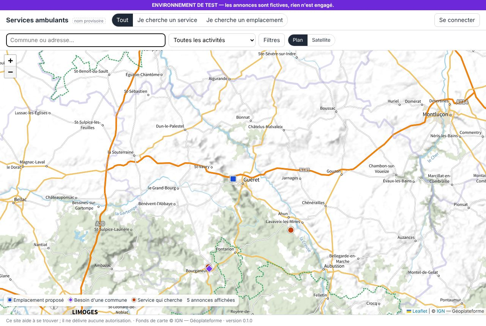
La carte, vue sans compte, cadrée sur la Creuse.
Un clic sur un repère ouvre sa fiche. Pour un service : activité, disponibilités, zones
d'action (dessinées sur la carte), besoins ; pour une recherche de mairie : services recherchés, créneaux,
équipements. Les valeurs absentes disent « non renseigné ».
La fiche d'un boulanger ambulant : son cercle de 20 km autour de Bourganeuf, 53 communes.
2. Mairie : s'inscrire, publier une recherche, être prévenue
S'inscrire
« Se connecter » → onglet « Créer un compte » → « Un accueillant ».
Nom affiché, adresse électronique, mot de passe (12 caractères au moins).
« Vous êtes » (mairie, camping…), nom de l'organisation.
Commune : taper le nom, « Chercher », choisir dans la liste. « Commune retenue »
confirme le choix.
Cocher « J'ai compris… » puis « Créer mon compte » : vous êtes connecté.
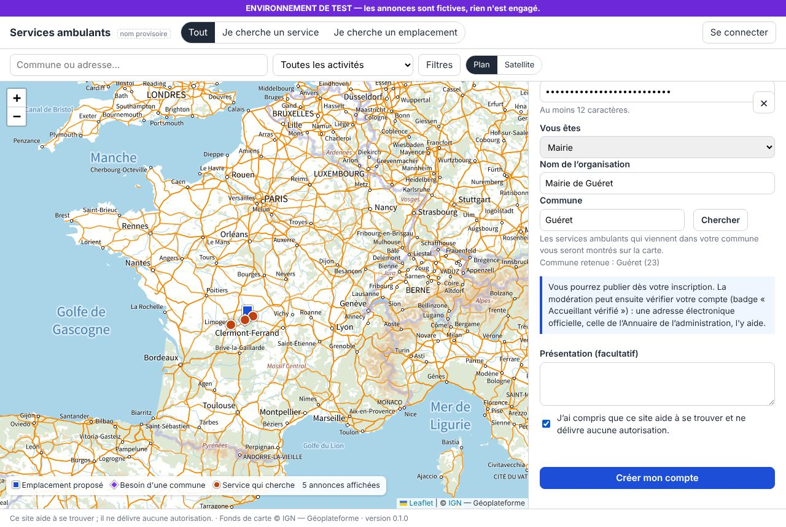
L'inscription d'une mairie : la commune choisie dans le référentiel.
Publier une recherche
« Publier ». Donner un titre (« Un food truck le mardi midi »).
Cocher les services recherchés (aucun : tous).
« + Ajouter une plage » pour chaque créneau souhaité : jour, de, à.
Le lieu : sans lieu fixé, ou un emplacement précis.
Où ? : chercher l'adresse et la choisir, ou cliquer sur la carte. La commune se
remplit seule.
Électricité, eau, occupation gratuite, redevance, conditions : si vous les connaissez.
« Publier ».
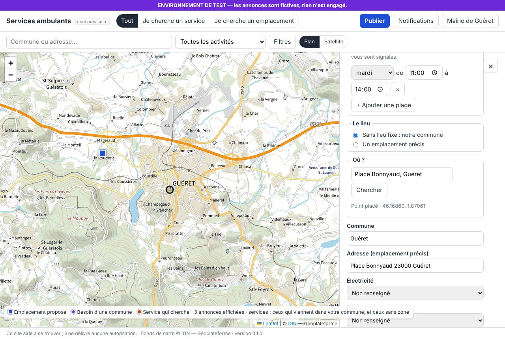
Le formulaire : créneau du mardi, lieu placé par la recherche d'adresse.
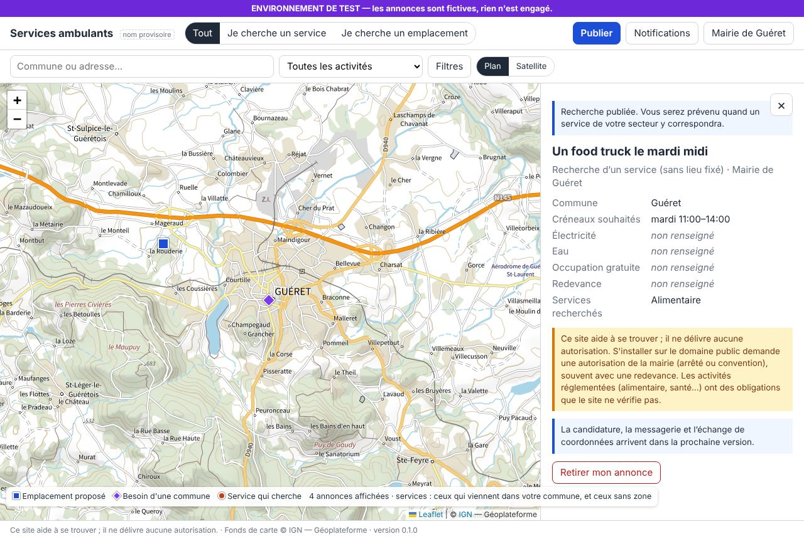
La recherche publiée. La légende rappelle que la mairie ne voit que les services qui viennent chez elle.
Être prévenue
Quand un service correspond, le bouton « Notifications (1) » s'allume. La notification
dit le service, son activité, votre recherche, et les créneaux en commun. « Voir le
service et sa zone » ouvre sa fiche et dessine ses zones.
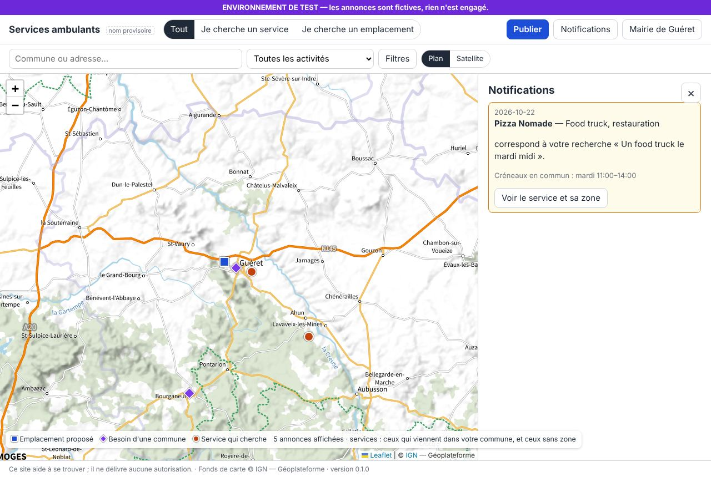
La notification reçue par la mairie de Guéret : créneau commun le mardi de 11:00 à 14:00.
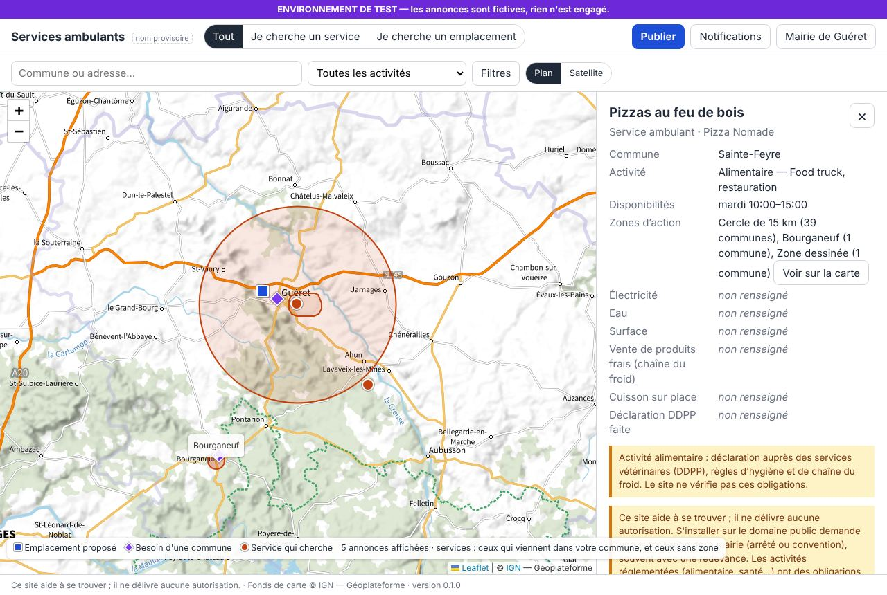
La fiche du service : son cercle de 15 km, Bourganeuf et sa zone dessinée.
Ce que voit une mairie
Une mairie connectée ne voit que les services qui viennent dans sa commune, et ceux qui n'ont indiqué
aucune zone. Ici, le coiffeur qui ne travaille qu'à Limoges n'apparaît pas à la mairie de Guéret.
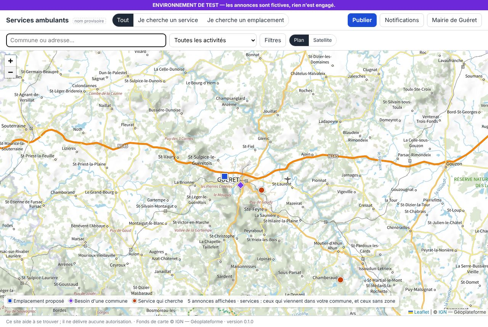
La carte de la mairie de Guéret.
« Mon compte » rassemble vos recherches (« Voir la fiche » ; « Retirer mon annonce » se trouve sur la
fiche), la déconnexion et l'effacement du compte.
3. Service ambulant : s'inscrire, déclarer ses zones, suivre ses demandes
S'inscrire
« Se connecter » → « Créer un compte » → « Un service ambulant ». Nom affiché, adresse, mot de passe ;
facultatifs : nom de l'entreprise, SIRET (déclaré), activités.
Proposer ses services
« Publier ». Titre, catégorie, activité ; les questions propres à l'activité (chaîne du froid…).
Où êtes-vous installé ? : chercher l'adresse ou cliquer sur la carte.
Mes zones d'action, autant que nécessaire :
« + Un cercle » : le centre est votre position (un clic le déplace), réglez le rayon ; le nombre
de communes s'affiche ; « Ajouter ce cercle » ;
« + Une ville » : chercher la commune, la choisir ;
« + Dessiner une zone » : appuyer sur la carte et tracer le contour sans lever le doigt ; la carte
ne bouge pas pendant le tracé.
Chaque zone s'ajoute à la liste avec son nombre de communes, « Voir les villes », « Voir la zone » et
« Retirer ».
Mes disponibilités : « + Ajouter une plage » (jour, de, à).
Besoins (électricité, eau, surface), description, puis « Publier ».
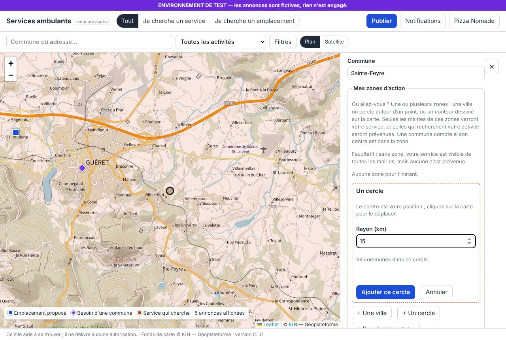
Le réglage d'un cercle de 15 km : 39 communes.
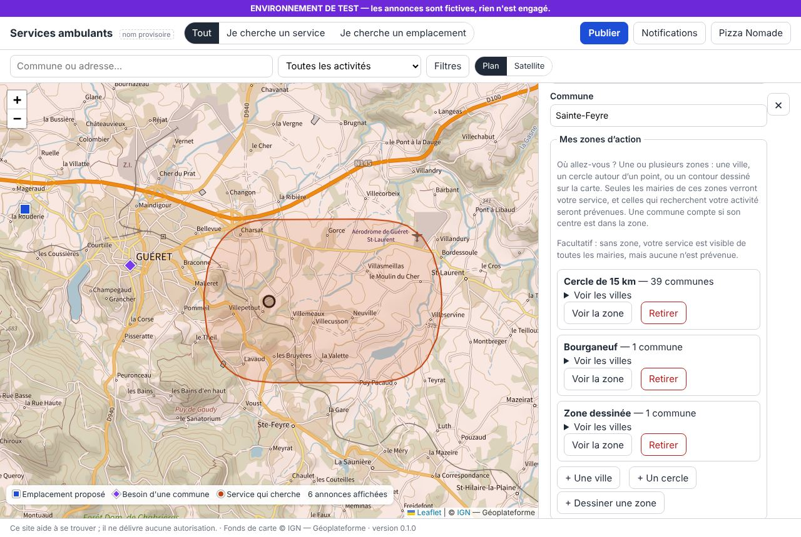
Trois zones : le cercle, la ville de Bourganeuf, une zone dessinée à la souris.
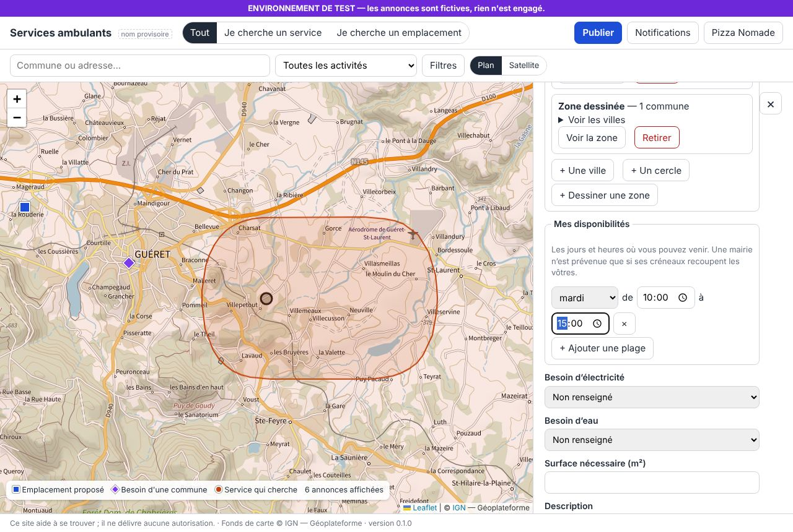
Les disponibilités : le mardi de 10:00 à 15:00.
Suivre ses demandes
Après la publication, « Mon compte » s'ouvre sur « Demande publiée : 1 mairie prévenue ». Dans
« Mes demandes », chaque demande montre le nombre de mairies prévenues, ses
disponibilités et, pour chaque zone, ses villes : celles dont la mairie a été prévenue sont en vert, avec
un lien vers sa recherche. « Voir la zone » la dessine sur la carte.
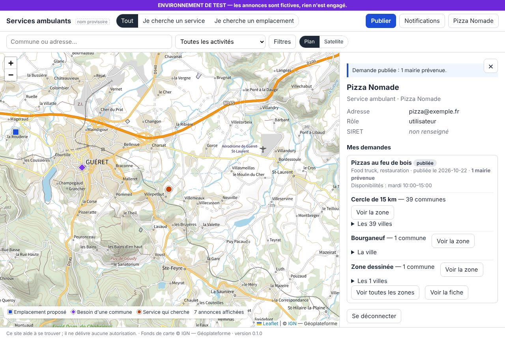
L'historique, juste après la publication.
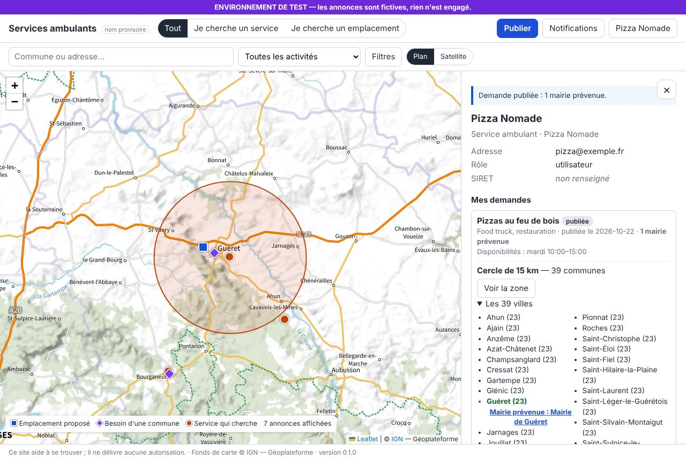
Les 39 villes du cercle ; Guéret, dont la mairie a été prévenue, en vert.
4. Filtrer la carte
Choisir une catégorie dans la barre, puis « Filtres ».
Dans le panneau : activité précise, jour et heures, électricité / eau / gratuité, mairies vérifiées,
date de publication.
« Voir la carte », en bas, ou « × Fermer », en haut, referme le panneau — même sans rien avoir
choisi. Les filtres actifs restent en pastilles ; une croix en retire un ; « Tout effacer » les retire
tous.
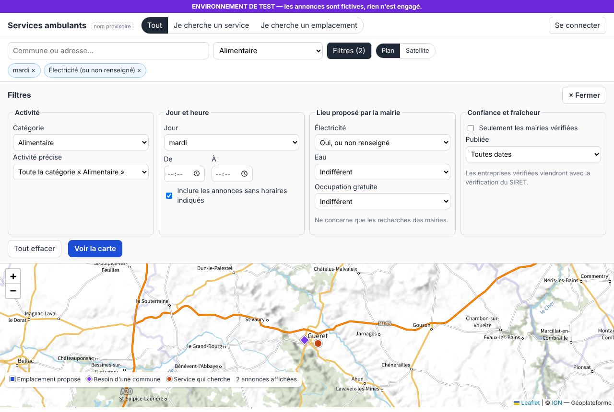
Alimentaire, le mardi, électricité « oui ou non renseigné » : 2 annonces.
5. Sur téléphone
La page s'adapte : la fiche monte du bas de l'écran, les filtres prennent tout l'écran avec
« × Fermer » toujours visible en haut et « Voir la carte » en bas, le tracé d'une zone se fait au doigt (le panneau se replie le temps du
tracé).
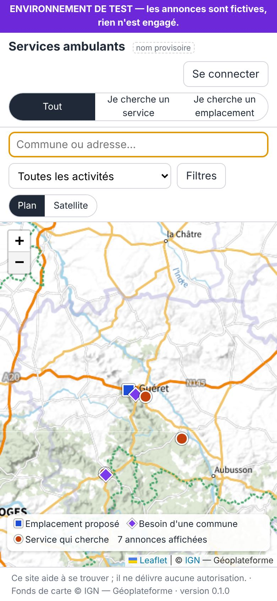
La carte.
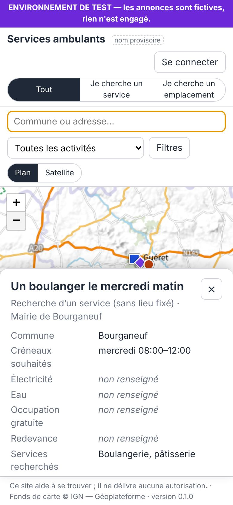
Une fiche.
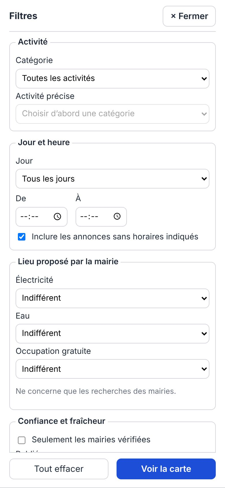
Les filtres.
6. Modération et administration
Les modérateurs et administrateurs ont un bouton « Console ».
Accueillants à vérifier (badge) : « Vérifié » donne le badge ; « Refuser », avec un
motif, bloque le compte et retire ses recherches.
Sur la fiche de toute annonce, un bloc Modération : « Masquer » (motif obligatoire)
ou « Réafficher ».
Tableau des droits (administrateur) : le niveau de chaque fonction et la case
« Active ».
Comptes et rôles (administrateur).
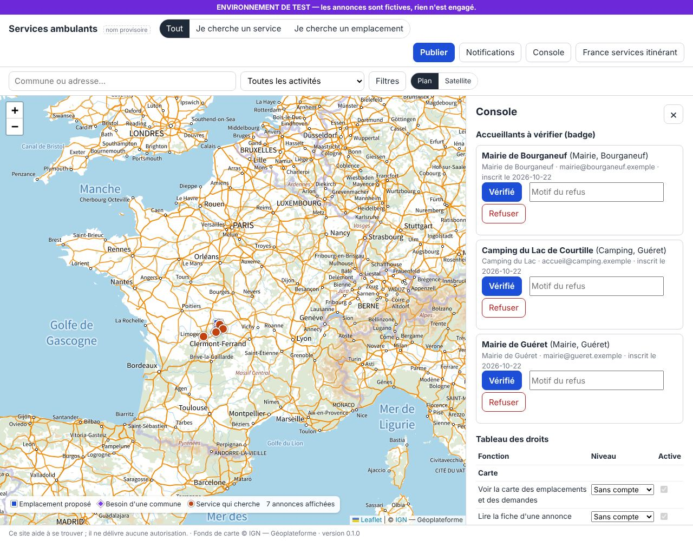
La console : les accueillants à vérifier.
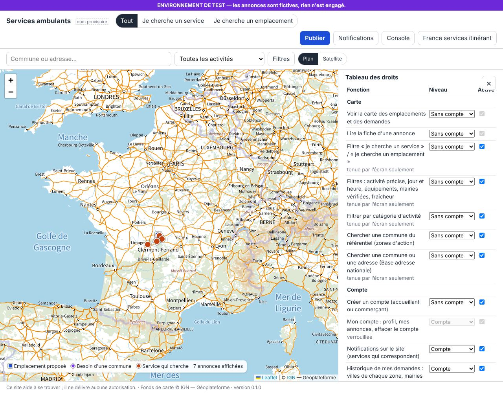
Le tableau des droits : un niveau et une case « Active » par fonction.
Le premier administrateur se nomme depuis le serveur :
python3 -m ambulants.cli promouvoir "Nom affiché" administrateur — sur le NAS, voir
SYNOLOGY.md, « Devenir administrateur ».